Guía de instalación de
Ubuntu 20.04 LTS
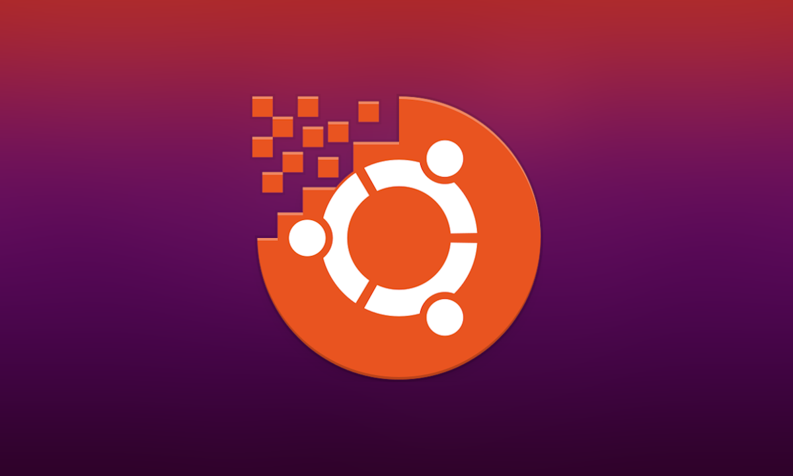1. Descarga Ubuntu OS desde
el directorio oficial
El primer paso para instalar Ubuntu de forma nativa es descargar el archivo ISO oficial del sistema operativo Ubuntu. Para este tutorial, vamos a ir con la más reciente versión de escritorio de Ubuntu 22.04 LTS.
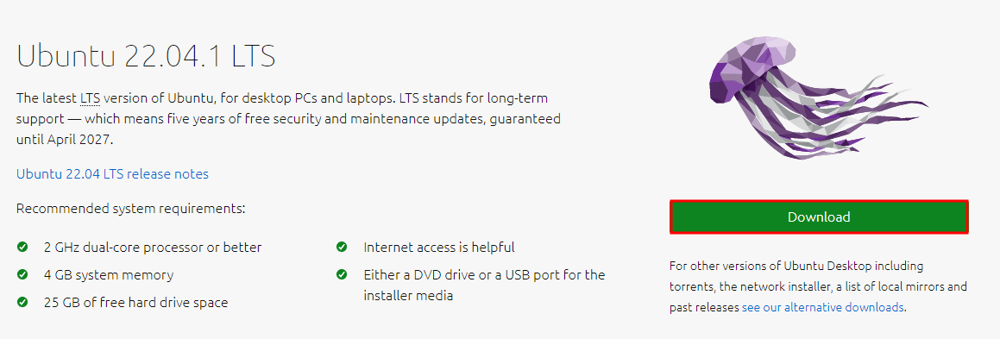Los usuarios también pueden elegir entre Ubuntu Server y otros ”sabores” de Ubuntu. Sin embargo, la versión principal de Ubuntu Desktop tiene todas las características esenciales que un principiante necesita.
Instalación de Ubuntu
Si ya lo tienes todo, listo comenzados con la instalacion de Ubuntu.
ten en cuenta:
-
El instalador de sistema de Ubuntu puede diferir ligeramente según la edición, pero a grandes rasgos el proceso es el mismo, incluso en el caso de que se utilice otro instalador de sistema, como por ejemplo ocurre con Lubuntu. No obstante, los pasos e imágenes de esta guía se corresponden con el proceso de instalación de Ubuntu 20.04 LTS, la edición principal con el escritorio GNOME.
-
Estar conectado a una toma de corriente si realizas la instalación en un equipo portátil no es imprescindible si tienes la batería cargada, pero es recomendable: si la batería se agota antes de finalizar, tendrás que comenzar desde el principio.
1. Selección de idioma
¿Instalar o probar?
Nada más arrancar, pulsando F2, puedes elegir el idioma e iniciar directamente la prueba o instalación del sistema, entre otras opciones. Sin embargo, este es un paso que puedes obviar porque conforme cargue el instalador se ofrecerán las mismas opciones. Se muestra por si te encuentras con algún problema, en cuyo caso puedes iniciar con las opciones de «modo gráfico seguro».

Sea como fuere, la pantalla anterior dura tan solo unos instantes y después se lleva a cabo una comprobación del medio de instalación que tampoco durará mucho más.
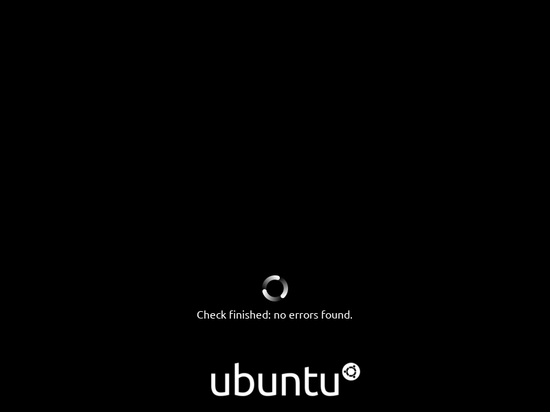Poco después (lo que tarde dependerá de tu equipo) aparecerá la primera pantalla del instalador de sistema, donde puedes elegir el idioma. Si has efectuado el paso anterior, este ya está hecho. Ubuntu ofrece la posibilidad de probar el sistema sin instalarlo en disco y sin afectar a cualquier otro sistema operativo que haya instalado.
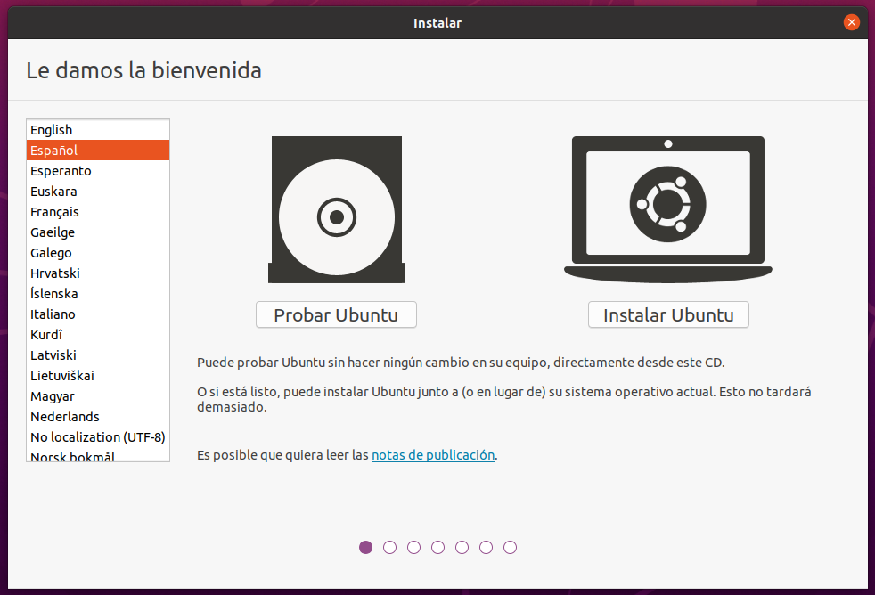Si escoges probar Ubuntu se iniciará el escritorio, desde donde puedes continuar la instalación (lo hemos hecho así para esta guía para poder mostrar mejores imágenes).
2. Configurar la red
Al instalar Ubuntu en un PC que solo cuente conexión inalámbrica, el siguiente paso es la configuración de una red wifi. No incluimos captura porque instalamos con cable y en máquina virtual. En cualquier caso, no es necesario estar conectado para instalar el sistema y la red wifi se puede configurar más tarde.
3. Disposicion del teclado
El siguiente paso consistira en configurar la Disposicion del teclado, que deberia estar fijada de manera automatica de acuerdo al idioma elegido.
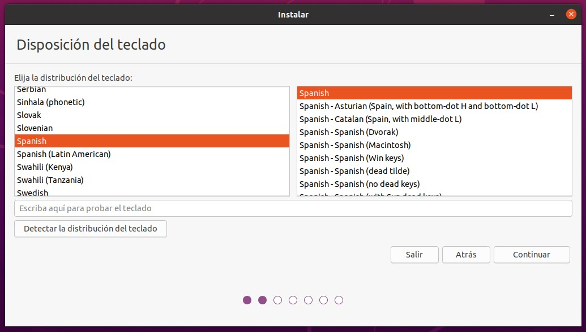-
• En nuestro caso elegimos el idioma español y la disposición por defecto es la española, por lo que basta con darle a continuar.
-
• Puedes comprobar que todo está correcto en el campo «Escriba aquí para probar el teclado», por ejemplo, introduciendo letras como ñ o ç, típicas de los teclados españoles.
-
• Usa «Detectar la distribución del teclado» solo si tienes problemas, por lo general no es necesario.
4. Actualizaciones y otro software
En este apartado se determina el tipo de instalación, con varias opciones relativas a los paquetes que se instalarán.
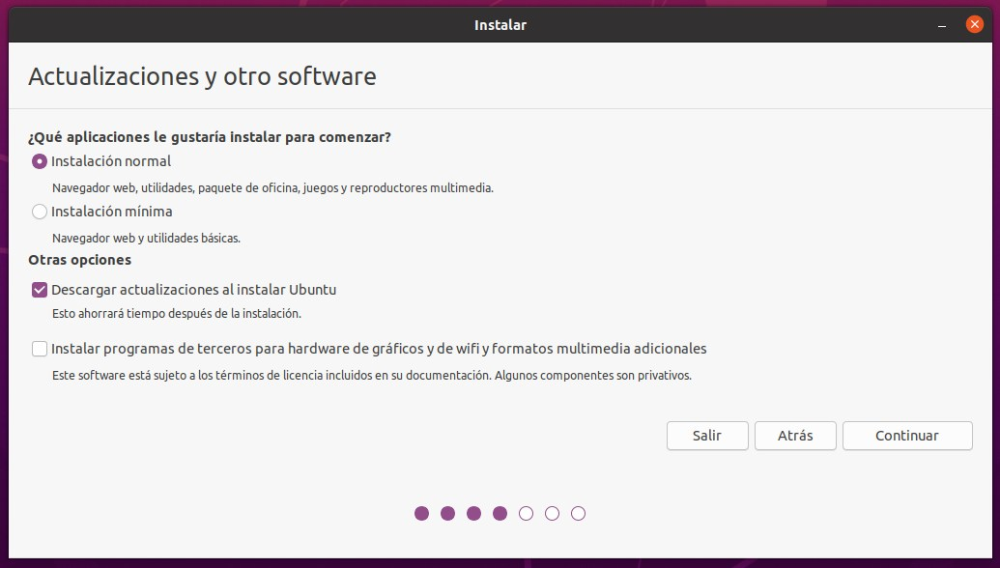5.Tipo de instalacion
Este es el paso más complejo de la instalación, ya que la configuración varía de instalar en un disco vacío, instalar junto a otro sistema operativo, crear o modificar particiones, etc.; y se puede perder información si no se hace bien. Una vez hayas configurado este apartado y aceptes continuar con la instalación, los cambios se escribirán en el disco. Hasta ese momento puedes cancelar la instalación sin afectar a nada de lo ya instalado en tu equipo. Para esta guía hemos diferenciado las tres situaciones que consideramos que pueden ser las más comunes.
5.1 Instalación basica
Si instalas Ubuntu en un equipo con uno o varios discos vacíos o con particiones o datos que no te interese conservar, la opción “Borrar disco e instalar Ubuntu” no falla y lo hará todo de manera automática.
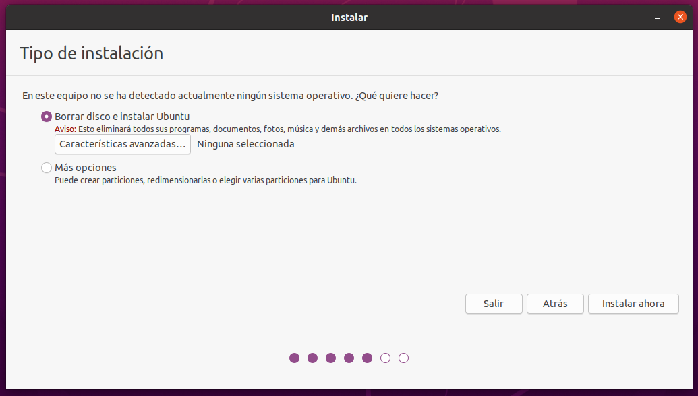Si solo tienes un disco, la instalación comenzará inmediatamente. Si tienes más de uno, en el siguiente paso podrás elegir en cuál se instala Ubuntu.
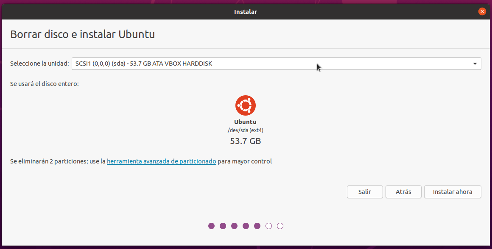ten en cuenta:
-
• En el desplegable de «Seleccione la unidad» puedes elegir el disco que corresponda. En caso de duda, Linux ordena el almacenamiento conectado como “sda”, “sdb”, “sdc”, etc. Fíjate también en el tamaño de cada disco para saber con certeza dónde vas a instalar.
5.2 Instalación basica cifrada
Si quieres cifrar la instalación, pulsa en la casilla «Características avanzadas» (primera imagen de la instalación básica) y marca las opciones «Utilizar LVM en la instalación de Ubuntu» y «Cifrar la instalación de Ubuntu para mayor seguridad».
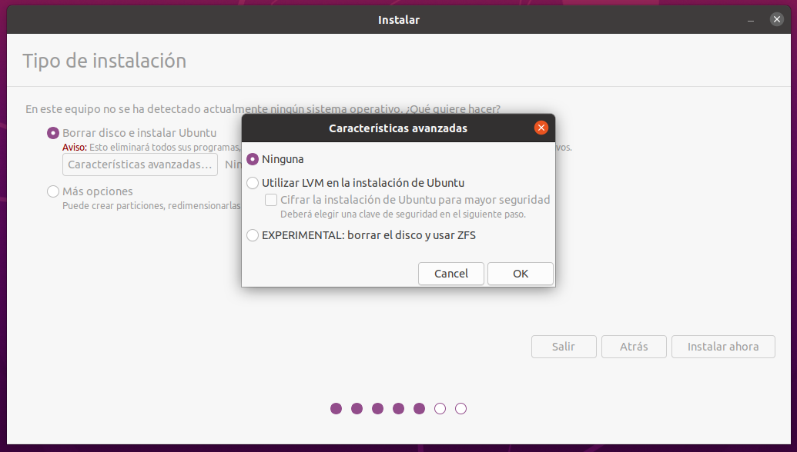Este es el método más sencillo y directo de cifrar el disco, lo cual suele ser una buena práctica de seguridad, especialmente recomendada en ordenadores portátiles. Si eliges cifrar el disco, en el siguiente paso deberás elegir una contraseña.
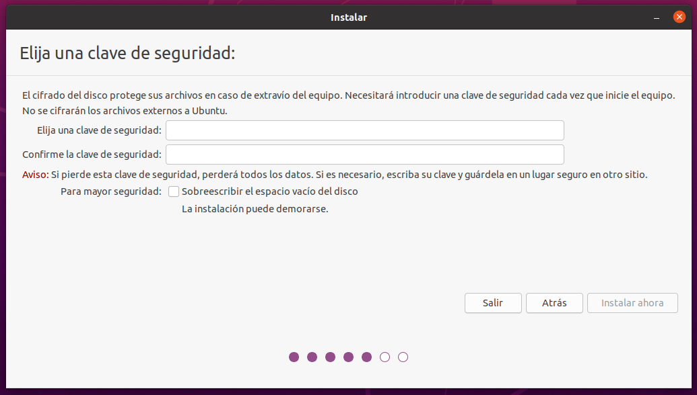ten en cuenta:
-
• Presta atención al aviso del instalador, porque si pierdes la contraseña, perderás el acceso al sistema y a tus datos.
-
• Puesto que ya estás cifrando el disco, marcar la casilla “Sobreescribir el espacio vacío del disco” es una opción que solo va a demorara el proceso y que te puedes saltar.
5.3 Instalación de Ubuntu
con Windows
Este es, posiblemente, uno de los casos de uso más habituales para nuevos usuarios y el instalador de Ubuntu lo detectará sin ningún problema, permitiendo proceder con la instalación con un simple paso adicional.
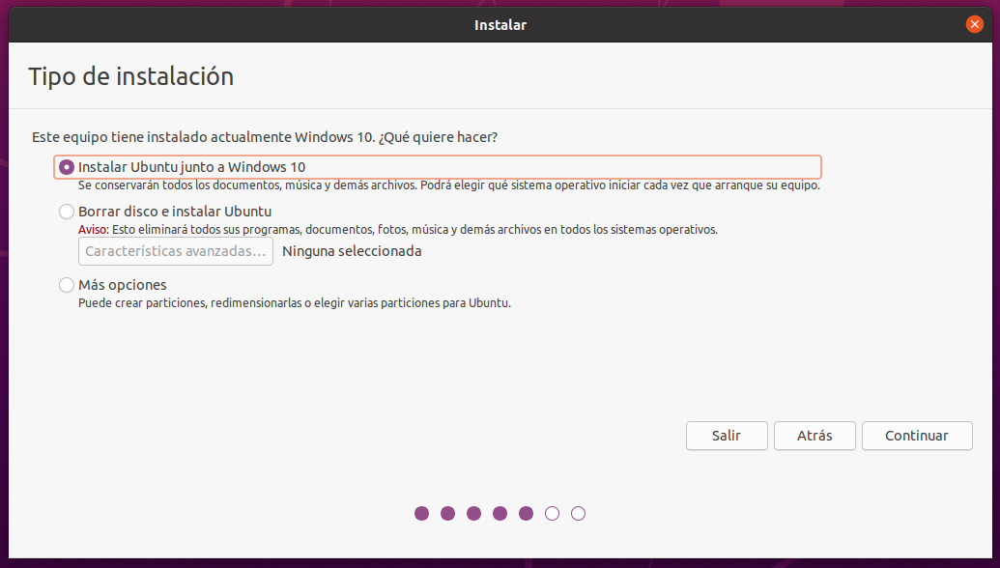Sin embargo, dado que lo más probable es que Windows ocupe todo el disco, antes de proceder es imprescindible hacer espacio para no perder información. La forma más segura de hacerlo es preparando las particiones desde Windows, para lo cual te recomendamos la siguiente guía:
(Cuando salga la nueva actualización de Windows 10 nuestros compañeros de MC actualizarán la guía para Ubuntu 20.04 y nosotros el enlace y esta nota, pero el proceso es el mismo.)
En resumen, las opciones son liberar espacio y crear particiones para instalar Ubuntu desde Windows, o simplemente liberar el espacio suficiente como para instalar Ubuntu. Por ejemplo, si tienes un disco de 120 GB y quieres darle la mitad a Ubuntu, asegúrate de liberar 60 GB. Pero ten cuidado: es importante que cada sistema disponga del mayor espacio libre posible, no apures porque tendrás problemas.
En nuestro ejemplo hemos instalado Ubuntu en un disco de 50 GB ocupado por completo por Windows 10. Por defecto Ubuntu se adjudica 15,6 GB (un 25% del total), pero es posible modificarlo de manera muy sencilla, ya que el instalador de Ubuntu permite redimensionar el espacio disponible en el momento.

5.4 Instalación avanzada
Eligiendo “Más opciones” (primera imagen de la instalación básica) accederás al particionador de sistema, donde podrás configurar todo al pormenor, incluyendo el cifrado de particiones, puntos de montaje, etc.
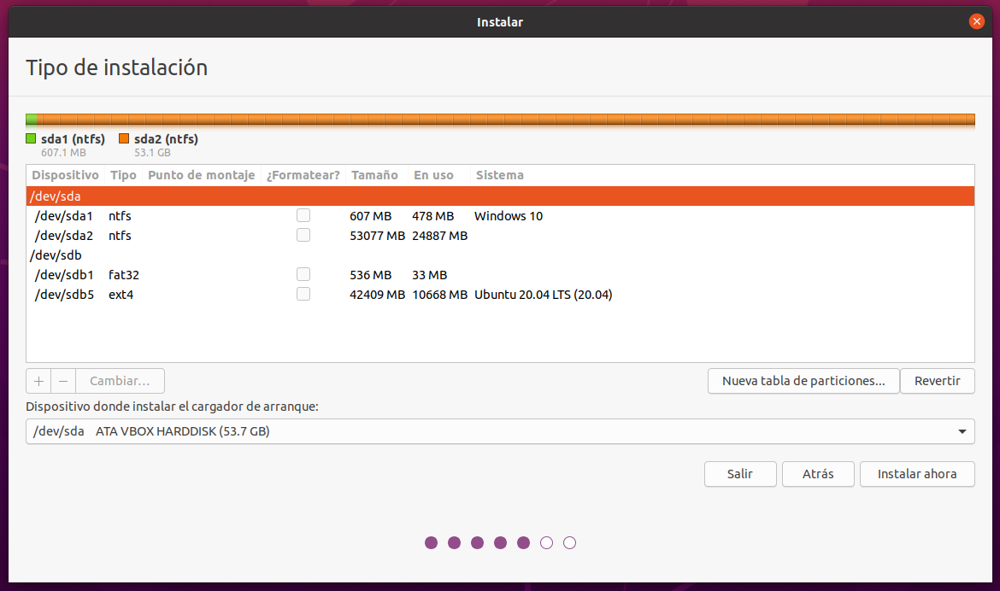En la imagen de ejemplo se muestra la configuración que hemos utilizado para la instalación de Ubuntu junto con Windows, con dos discos y un par de particiones por cada sistema. Este proceso puede variar según los discos y particiones que tengas, y es por eso que este apartado se merece un tutorial exclusivo que no cabe aquí.
Quizás publiquemos un tutorial más detallado más adelante. Mientras tanto, nuestras viejas guías de Ubuntu pueden darte una idea de cómo moverte por este proceso. Las siguientes guías pueden serte útiles:
- En la guía de instalación básica de Ubuntu encontrarás cómo realizar un particionado básico.
- En la guía de cifrado de disco en Ubuntu encontrarás cómo cifrar diferentes particiones.
Ten en cuenta que algunos pasos en esas guías pueden estar obsoletos, así que te recomendamos encarecidamente que, si no sabes lo que tocas, no lo toques. Los métodos de instalación explicados anteriormente deberían ser suficientes para la mayoría de los usuarios.
Este método es el más flexible y suele ser elegido por usuarios experimentados. Sin embargo, ten en cuenta que una vez particionado el disco, comenzará la instalación del sistema y no habrá vuelta atrás. Hasta este punto, todos los cambios son reversibles.
6. Localización
La instalación ya ha comenzado, pero aún hay que completar un par de apartados. El primero, el lugar en el que te encuentras, para fijar la hora del sistema.
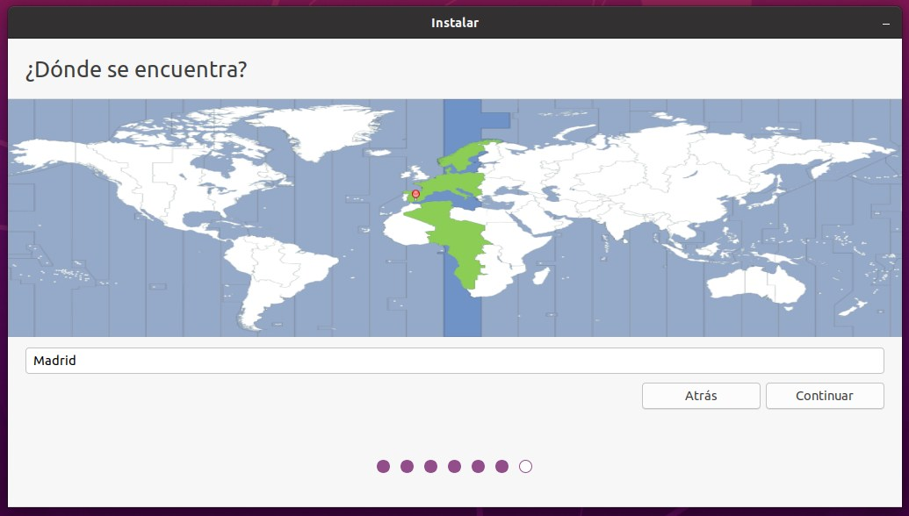7. Creación de usuarios
Llegamos al último paso de la instalación, la creación del usuario. Tan sencillo como rellenar los datos que pide.
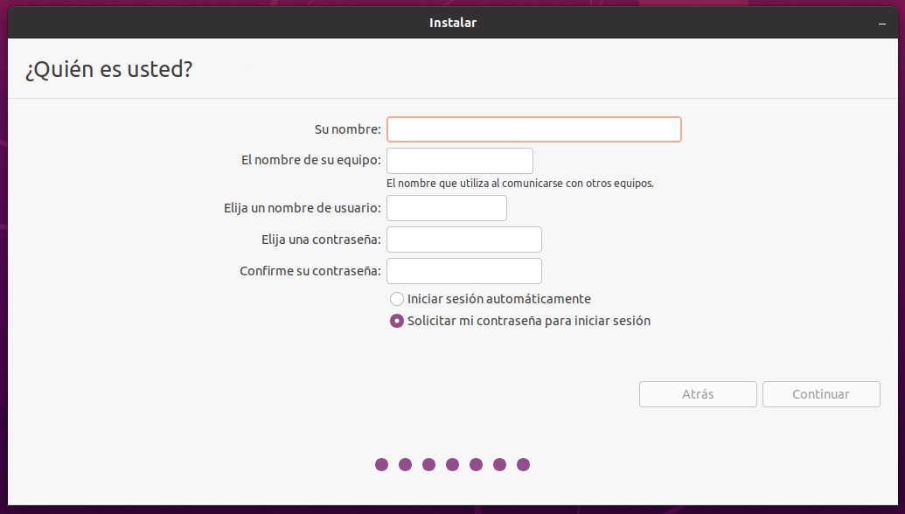Ten en cuenta:
-
El nombre del equipo se rellena automáticamente, pero puedes editarlo si quieres.
-
Si has realizado la instalación básica cifrada y el único usuario del equipo vas a ser tú, puedes marca la opción de “Iniciar sesión automáticamente”, pues ya debes introducir una contraseña en el arranque de la máquina.
Lo único que te queda por hacer es esperar a que se complete la instalación mientras ves pasar las diapositivas de presentación…
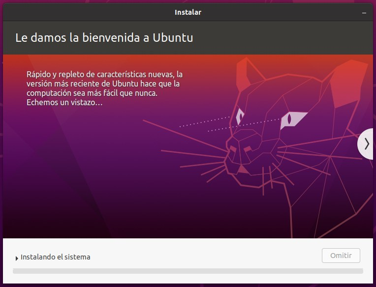La duración de la instalación puede variar: en equipos más antiguos puede demorarse en torno a una media hora, mientras que en equipos nuevos se reduce a entre 5 y 15 minutos. Llegado el momento el instalador pedirá reiniciar, retirar la imagen de instalación del equipo y pulsar enter para reiniciar el sistema.
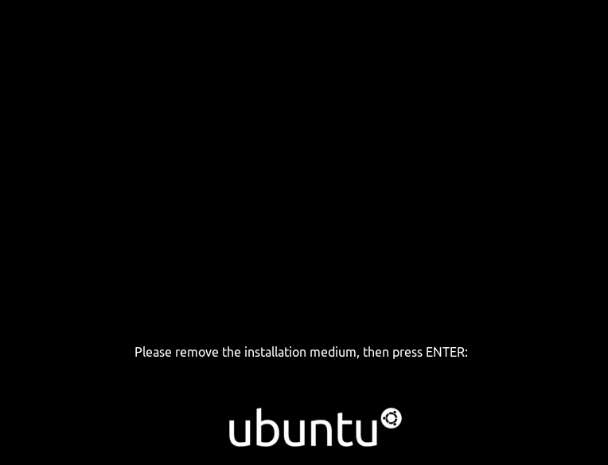
Guía de configuración básica
de
Ubuntu 20.04 LTS
Una vez publicada la guía de instalación de Ubuntu 20.04 LTS pasamos con la siguiente: nuestra guía de postinstalación, configuración, primeros pasos, cosas que hacer después de instalar… Llámalo como te apetezca, porque es lo mismo. Sin embargo, esta segunda guía podría ser tan extensa como uno quisiera, razón por la cual la reducimos a lo más básico.
En esta guía de configuración básica de Ubuntu 20.04 LTS te explicamos lo mínimo que debes hacer tras la instalación del sistema, paso a paso, de la manera lo más concisa y simple posible, pero con apuntes adicionales para mayor información. Antes de comenzar te recomendamos leer con detenimiento:
-
Consideraciones previas, donde reunimos varias cosas que deberías tener en cuenta antes de instalar Ubuntu, incluyendo la posibilidad de probarlo sin instalarlo, los requisitos estimados o la grabación de la imagen de instalación, entre otras.
-
Anuncio de lanzamiento de Ubuntu 20.04 LTS,donde te resumimos las novedades de esta versión y donde encontrarás los enlaces para acceder a la descarga de las imágenes de instalación.
-
Guía de instalación de Ubuntu 20.04 LTS, donde te explicamos el proceso de instalación de Ubuntu paso a paso.
Configuración básica de Ubuntu
Una vez instalado Ubuntu, apenas hay unas pocas cosas realmente necesarias que hacer y será el propio sistema el que te avise de ello con diferentes asistentes. No obstante, te guiamos por el proceso y añadimos unos cuantos extras que te puede interesar conocer. Ten en cuenta: todo o parte de lo que sigue puede servir o no para todas las ediciones de Ubuntu, pero esta guía se basa en la edición oficial de Ubuntu 20.04 LTS con el entorno de escritorio GNOME.
Asistente de inicio
La primera vez que inicies sesión verás aparecer un asistente a través del cual poder configurar algunos aspectos importantes del sistema. Puedes ignorarlo si quieres porque puedes configurarlo todo más adelante, pero te hacemos el tour.
1.1 Cuentas en línea
El primer paso te permite configurar las cuentas en línea, en el caso de que quieras integrar el escritorio con diferentes servicios.
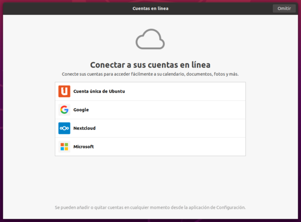ten en cuenta:
-
La cuenta de Ubuntu te servirá para poder puntuar y dejar comentarios en la tienda de aplicaciones o para iniciar sesión y activar Livepatch (más información en el paso siguiente).
-
Las cuentas de Google, Nextcloud y Microsft ofrecen una mayor integración, por ejemplo para acceder al almacenamiento en la nube, correo electrónico, calendario, etc.
1.2 Livepatch
Livepatch es un servicio que permite la instalación de algunas actualizaciones que por lo general precisarían de un reinicio del sistema, como por ejemplo las del kernel. Es una opción muy interesante en servidores, donde parar un minuto el servicio puede suponer un problema. En sistemas de escritorio no es necesario. Para utilizarlo hay que registrar una cuenta de Ubuntu.
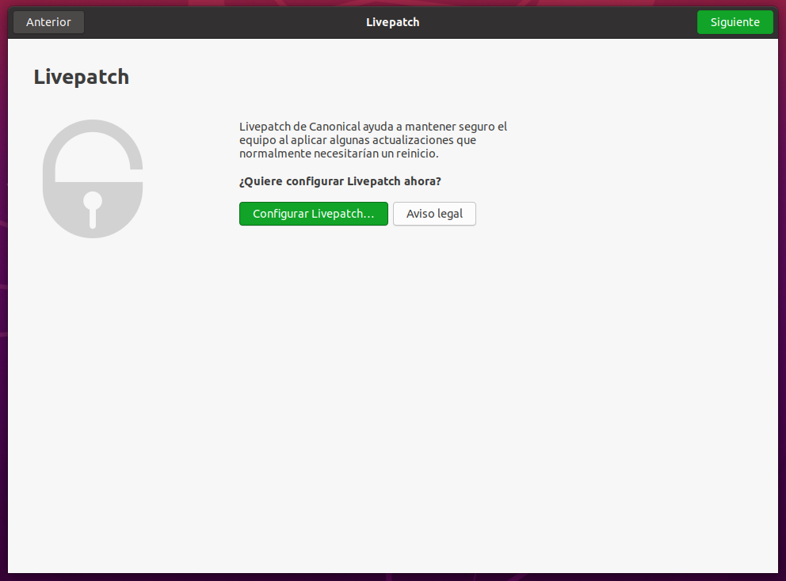1.3 Ayuda a mejorar Ubuntu
En este paso puedes elegir enviar o no datos de tu sistema a Ubuntu. La opción viene activada por defecto, pero el envío no se realizará hasta que se acepte. En el caso de que te lo preguntes, es seguro y los datos son de carácter anónimo, pero puedes revisar lo que se envía para asegurarte. Los resultados se utilizan para mejorar Ubuntu, por lo que es un forma de contribuir a la mejora del sistema sin ningún esfuerzo.
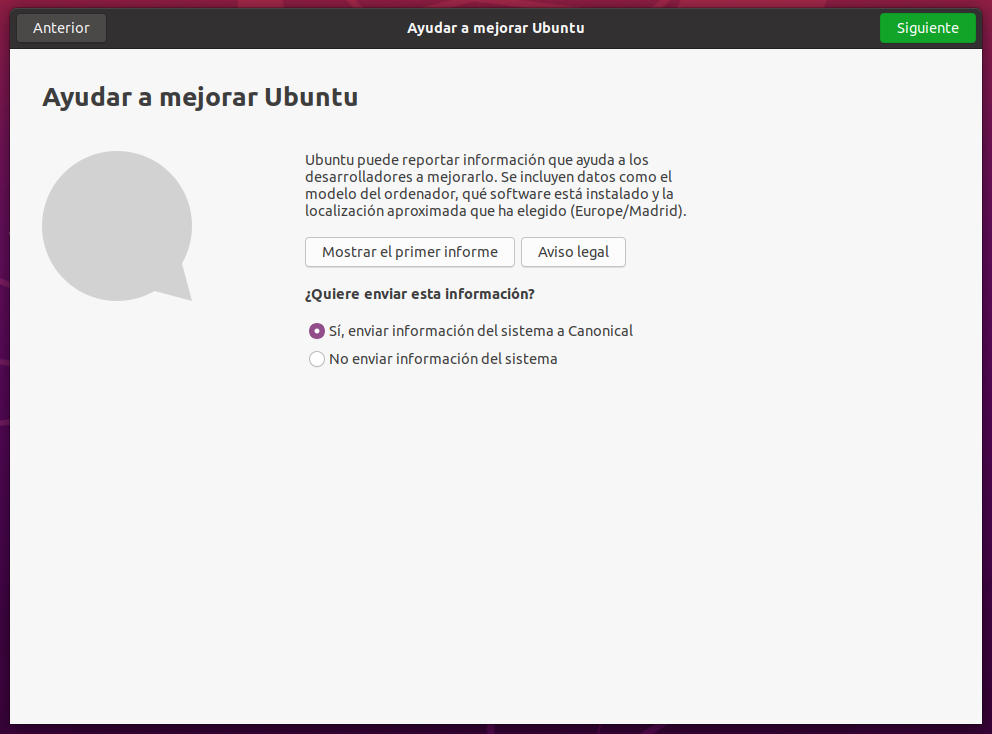1.4 Privacidad
El siguiente paso se explica por sí solo: ¿quieres activar los servicios de ubicación para que las aplicaciones puedan determinar tu ubicación geográfica y ser más precisas? Recuerda que todas las aplicaciones instaladas por defecto en Ubuntu son software libre y esos datos no van a salir de tu equipo.
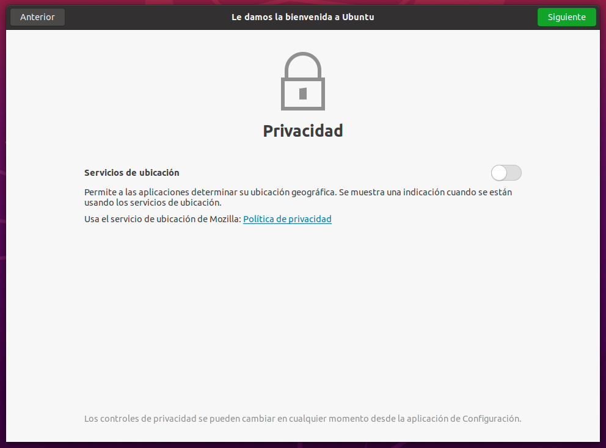1.5 ¡Está listo para comenzar!
La última pantalla muestra algunas aplicaciones destacadas -algunas de las cuales no son software libre- y la opción de abrir el centro de software para instalarlas. Pero no es urgente. Puedes cerrar el asistente.
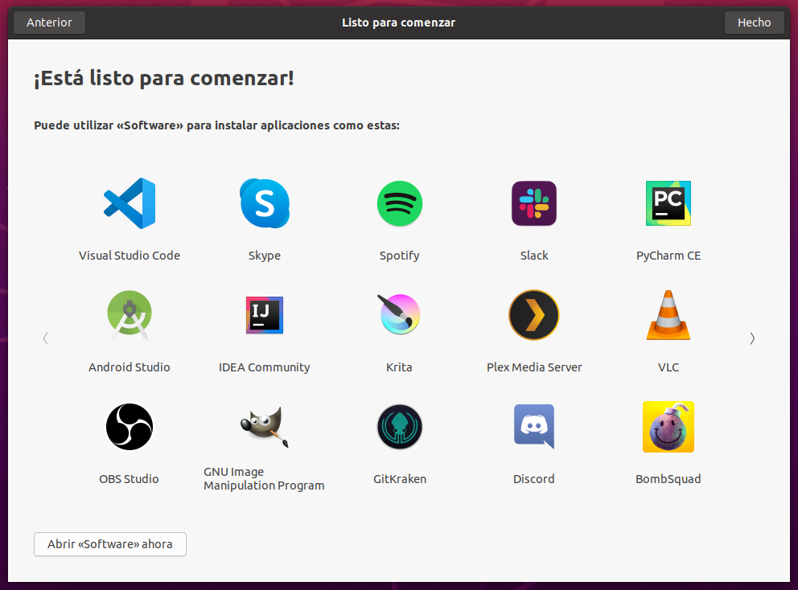